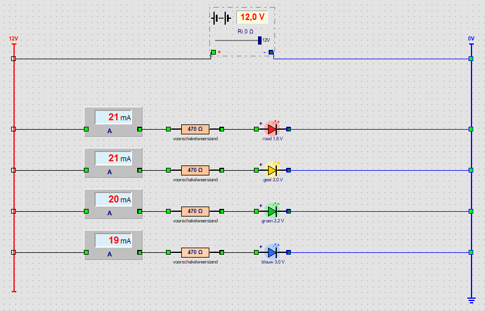
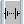

LED only conducts above its forward
voltage. That depends on the colour: blue light needs more energy than red light.
LED only conducts above its forward
voltage. That depends on the colour: blue light needs more energy than red light.Learning path › Electronics › Lesson 31 of 42

An LED only conducts above its forward
voltage. That depends on the colour: blue light needs more energy than red light.
| Colour | Forward voltage | Current at 12 V and 470 Ω |
|---|---|---|
| red | 1.8 V | 21 mA |
| yellow | 2.0 V | 21 mA |
| green | 2.2 V | 20 mA |
| blue | 3.0 V | 19 mA |
At 12 V that hardly matters: the resistor takes almost all the voltage, and all the LEDs are about equally bright.
The  milliammeters show it: 21, 21, 20 and 19 mA.
milliammeters show it: 21, 21, 20 and 19 mA.

source to the left. The source moves in steps of 0.5 V.If you want exactly 20 mA, you work out the series resistor for each colour:
R = (Usource − ULED) / I = (12 V − 1.8 V) / 0.020 A = 510 Ω (red)
For blue: (12 − 3.0) / 0.020 = 450 Ω. Resistors only come in fixed values; 470 Ω is close enough to both.
Above 30 mA an LED breaks. Can you also use 220 Ω at 12 V? Work it out first, then try it (right-click a resistor). You replace a broken LED with right-click › Replace LED.
No. With 220 Ω, (12 − 1.8) / 220 ≈ 46 mA flows through red, and even through blue (12 − 3.0) / 220 ≈ 41 mA. All the LEDs break. The resistor must be at least (12 − 1.8) / 0.030 = 340 Ω.